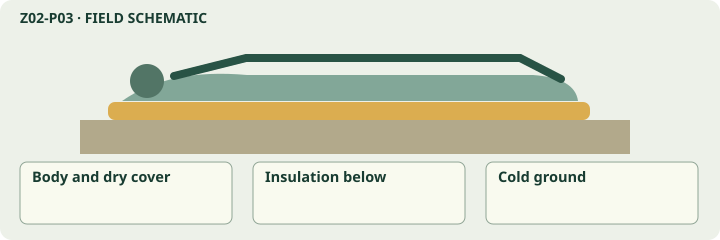

Z02-P03 · Shelter and housing · Adapted historical material
Make a dry insulated bed
Reduce heat loss through contact with cold ground.
When it applies · Short-term rest outdoors on a safe, dry site.
Equipment · Camping pad or other dry insulating layer, dry clothing and weather cover if available.

Actions
- Select ground away from runoff and above standing water. Keep dry gear out of splash and wet snow.[E04, E05]
- Place dry insulation between body and ground. Add dry layers above and keep protection available for wind and precipitation.[E05, E09]
- Check for gaps under the body and wet material after settling. Replace wet insulation or move if the site is deteriorating.[E05, ED]
Verify · The body is separated from cold ground and the bedding stays dry where the person rests.[E05, ED]
Stop or change course · If the person becomes confused, very drowsy or loses coordination after cold exposure, seek help promptly.[E06, T03]
Evidence and editorial notes
- E04 · NWS · Flood Safety: Key Points for Camping and Hiking (agency PDF)
- Section: Before and during camping; know your surroundings · Conditions: Stream valleys and runoff channels subject to flash flooding
Support: Choose higher ground away from water channels. Rain far upstream can drive rapid flooding.
Limitations: Dry streambeds and gentle swales can flood rapidly without local rainfall. · Conflicting evidence: None; aligns with NWS-FLOOD.
Editorial note: Core hydrological exclusion rule for shelter placement. · Specialist reviewer: Emergency management and hydrology
Primary source · checked 2026-11-24 - E05 · NWS · What To Do If You're Caught in a Winter Storm (current web edition)
- Section: Outside and find shelter · Conditions: Cold, wet or windy winter conditions
Support: Block wind, stay dry and keep off cold ground. Keep exposure reduction separate from making a fire.
Limitations: Improvised windbreaks do not provide rated thermal protection or snow-load capacity. · Conflicting evidence: None; aligns with CDC-H.
Editorial note: Separates wind, ground, and moisture heat-loss pathways. · Specialist reviewer: Cold-weather shelter specialist
Primary source · checked 2026-11-24 - E06 · CDC · Preventing Hypothermia (current web edition)
- Section: Recognizing and treating hypothermia · Conditions: Cold wet exposure; signs such as confusion, slurred speech, fumbling or drowsiness
Support: Suspected hypothermia warrants prompt help and protection from further cooling. It can occur above freezing if wet or chilled.
Limitations: Early mild shivering can mask rapidly worsening judgment impairment. · Conflicting evidence: None; aligns with ARC and WMS guidance.
Editorial note: Anchors exposure-to-medical escalation thresholds. · Specialist reviewer: Wilderness medicine
Primary source · checked 2026-11-24 - E09 · NPS · Ten Essentials (current web edition)
- Section: Insulation; Emergency Shelter · Conditions: Weather, terrain and expected overnight risk
Support: Extra clothing and usable emergency shelter belong in the route-specific kit.
Limitations: Emergency bivies and space blankets trap condensation and tear easily if misused. · Conflicting evidence: None; requires inspecting and practicing shelter deployment.
Editorial note: Supports overnight emergency shelter readiness. · Specialist reviewer: Cold-weather shelter and field education
Primary source · checked 2026-11-24 - T03 · CDC · Preventing Hypothermia (current web edition)
- Section: Warning signs; What to do · Conditions: Cold exposure and suspected hypothermia
Support: Confusion, slurred speech and drowsiness are warning signs. Obtain medical attention and protect from further cold.
Limitations: Shivering may stop as hypothermia worsens; absence of shivering is not reassurance. · Conflicting evidence: None; aligns with WMS cold guidelines.
Editorial note: Core neurological red-flag trigger for stopping activity and calling rescue. · Specialist reviewer: Wilderness medicine
Primary source · checked 2026-11-24
Source lineage · B012-P11 · Classification · Adapted historical material.